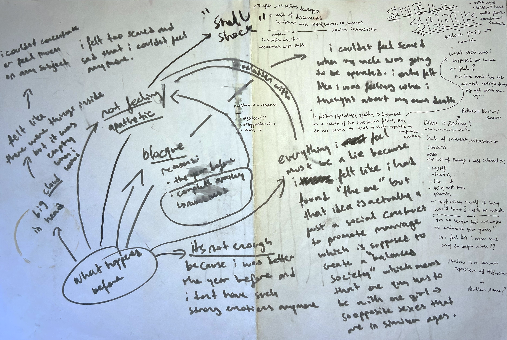
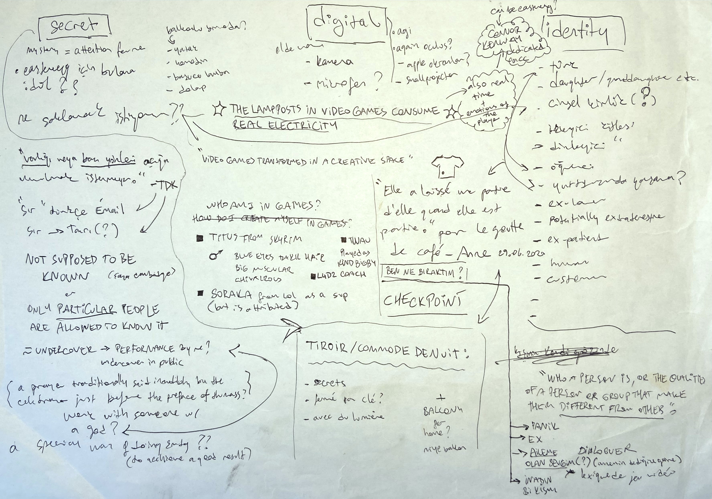
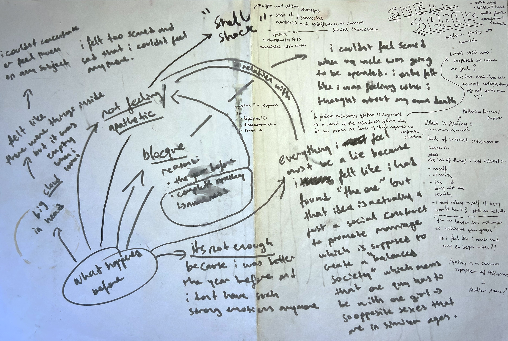
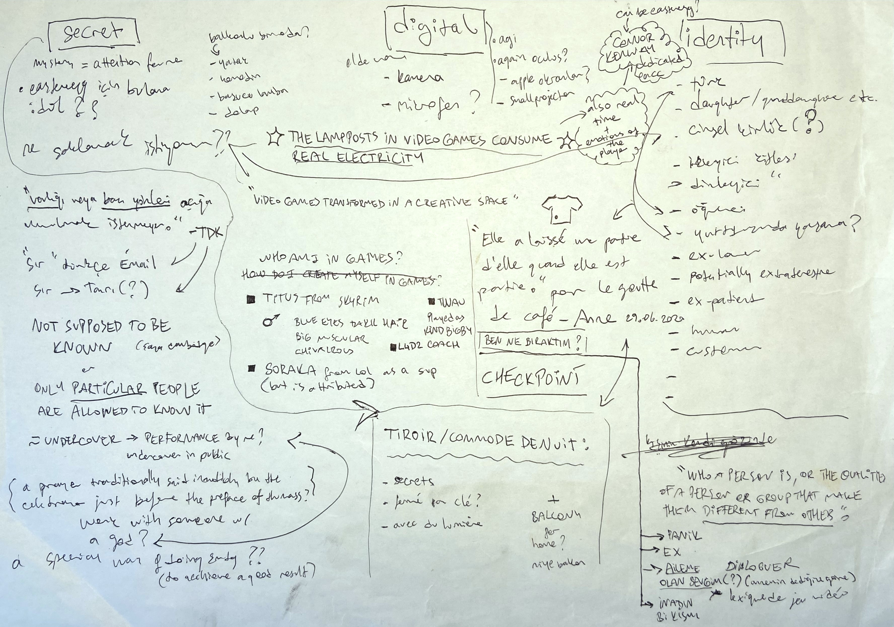

SHELL SHOCK: A TERM TO DESCRIBE THE TYPE OF POST TRAUMATIC STRESS DISORDER SOLIDERS EXPERIENCED AFTER WW1.
A shell can be a sign of home, a safe space.
The immersive experience "Shell Shock" is an invitation to the spectator, granting them a medium in choosing their path within the installation's narrative trajectory. It is a exemplification to the individual's inherent desire for guidance and the nuanced balance between surrendering to direction or forging an independent course.
Intentionally positioned in the same space as "Echappatoire" (2019), the site specific installation "Shell Shock" represents the visual embodiment of the artist's resilience. As the spectator enters, their attention is immediately drawn to an appended piece of white wall, purposefully placed to require a stooped posture for entry. Within this restricted physicality, a realm of exploration unfolds:
Above the entrance, an unobtrusive speaker awaits, positioned to guide the spectator's journey within this confined space. Its disembodied voice initiates a vivid description of the room's highlights, offering suggestions and insights into potential actions to undertake. Gradually, the voice assumes a commanding presence, directing the spectator to position themselves upon the central white surface and beckoning them to close their eyes in compliance.
Yet, herein lies the crux of choice—the spectator, in their agency, can opt to heed the voice's commands, thereby engaging fully with its narrative trajectory. However, by solely succumbing to the narrator's story or directives, they unknowingly forgo an intriguing hidden element—an elusive "Easteregg" concealed from their view. Should the spectator, unencumbered by the allure of the narrator's tale, choose to explore their surroundings and cast their gaze beyond the screen before them, a discovery of another concealed object awaits, subtly embedded within the surface they are meant to rest upon.
This interplay of choice and discovery within "Shell Shock" grants spectators the opportunity to navigate the installation in alignment with their individual inclinations. It highlights the delicate happening between surrendering to external guidance and creating an independent path. In the realm of this immersive experience, the discerning spectator can unveil hidden gems, whether by complying the narrative's pull or embracing the unexpected allure of their surroundings—a testament to the vast potential for personal revelation that lies beyond prescribed trajectories.


 


